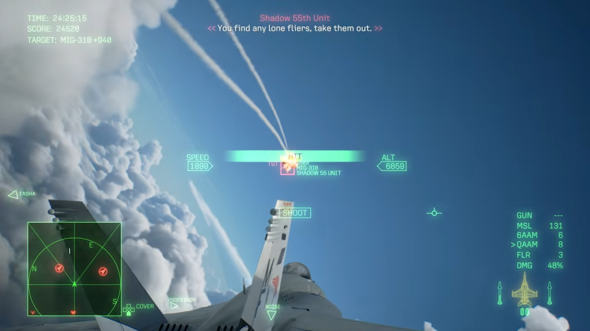
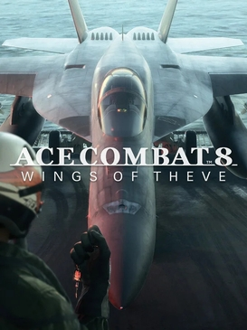

La franquicia de aviación más emblemática del videojuego regresa con Ace Combat 8: Wings of Theve, trasladándonos a julio de 2029 en el icónico universo de Strangereal. La trama arranca tras una invasión relámpago de la República de Sotoa sobre la Federación de Centro Usea (FCU). Como piloto superviviente rescatado a bordo del desgastado portaaviones Endurance, te integras al Escuadrón Joker para liderar la contraofensiva de la resistencia.

Motor climático "Cloudly":
Las nubes han dejado de ser meros elementos estéticos. El nuevo motor de renderizado simula condiciones dinámicas donde las estelas de condensación y el humo de los motores enemigos sirven para rastrear objetivos o maniobrar tácticamente en mitad del dogfight.
Órdenes de escuadrón:
Regresa el control directo sobre los compañeros de ala. Se pueden coordinar ataques simultáneos contra objetivos terrestres, navales o cazas de intercepción según la prioridad de la misión.
Ace Combat 8: Wings of Theve refina la fórmula arcade de la franquicia con un salto visual impresionante en el comportamiento del cielo y una narrativa mucho más personal. Es una cita obligada tanto para los fans acérrimos de la saga como para quienes buscan una experiencia de acción aérea vibrante y directa.
Lo Mejor
- El sistema climático dinámico y su impacto real en el combate.
- La escala y espectacularidad de las batallas contra superarmas.
- La inmersión de las secuencias en primera persona entre misiones.
